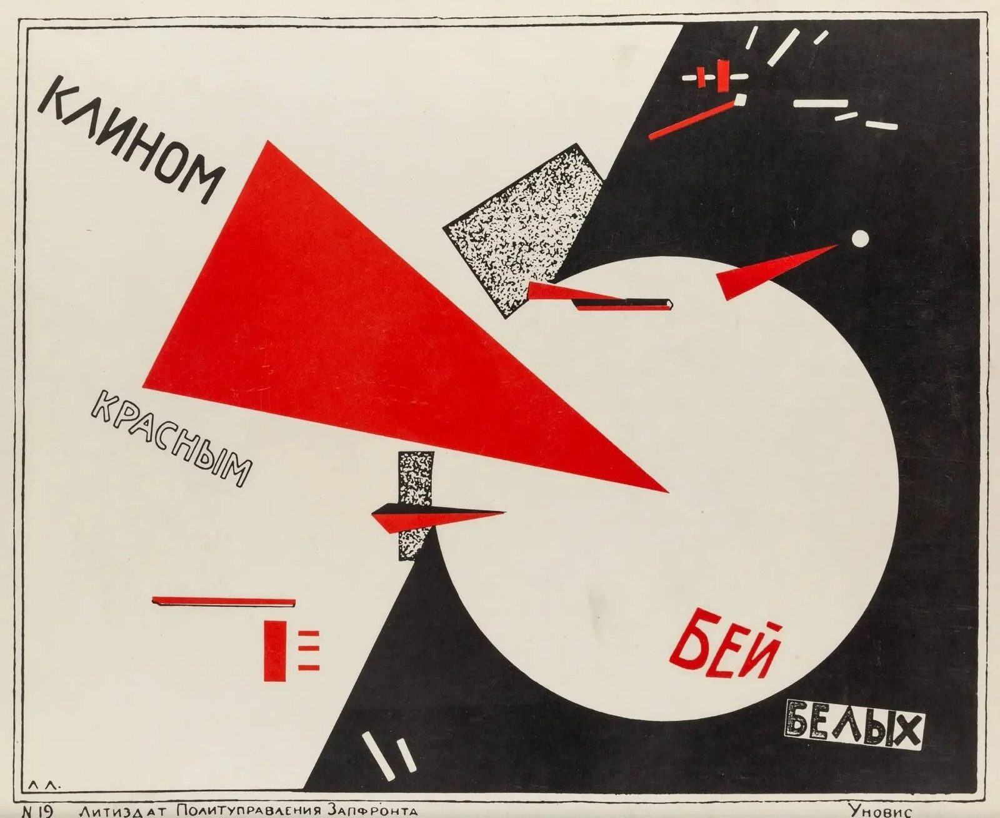
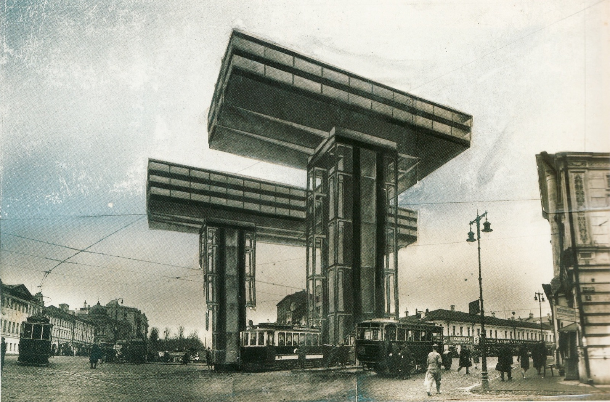
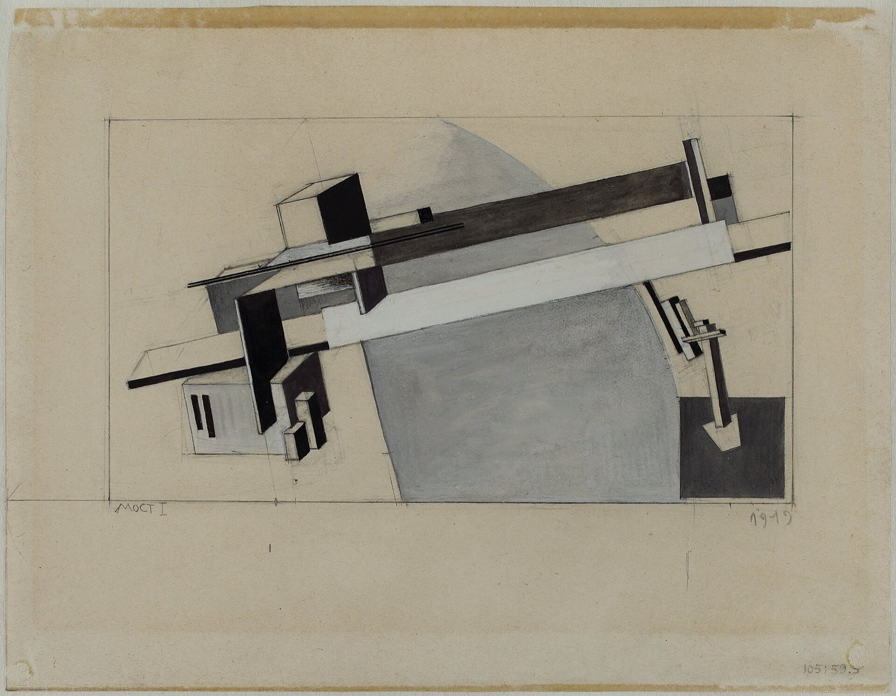
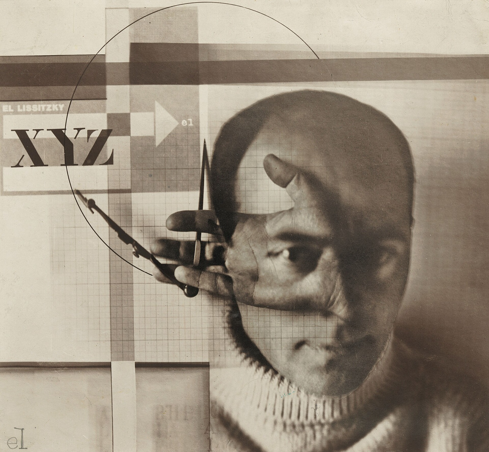

1920년대 중반, 모스크바에 있지도 않은 건물 하나가 설계되었다. 땅 위로 50미터를 띄워, 세 개의 거대한 기둥 위에 가로로 걸쳐 놓은 L자형 판. 이름은 '볼켄뷔겔(Wolkenbügel)', 구름을 거는 쇠, 구름 걸이라는 뜻이다. 수직의 기둥은 오직 건물을 버티는 일만 하고, 쓸모 있는 공간은 전부 수평으로 눕혀 놓았다. 기둥은 힘을 버티는 자리, 수평판은 쓰는 자리 — 당시 미국식 고층건물의 상식(수직으로 쌓아 올리는 방식)을 통째로 뒤집은 발상이었다. 모스크바 순환도로의 교차로마다 여덟 개를 세울 계획이었지만 결국 하나도 지어지지 않았다. 그런데 이 건물을 그린 사람은, 건축을 전공한 화가였다.
엘 리시츠키(1890~1941). 독일 다름슈타트 공과대학에서 건축공학을 전공해 1914년에 졸업했다. 러시아로 돌아온 뒤 모스크바의 건축사무소에서도 일했지만, 그 무렵부터는 화가로 더 많이 알려졌다. 비텝스크의 미술학교에서 가르치던 그는 카지미르 말레비치를 그 학교로 불러들였고, 그와 가까이 지내며 자신의 작업을 '프로운(Proun)'이라 불렀다. 그가 한스 아르프와 함께 엮은 1925년 저서 『Die Kunstismen』에 쓴 표현으로는 "회화에서 건축으로 갈아타는 정거장". 캔버스 위에 뜬 도형들은 장식이 아니라, 공간 속에서 힘이 어느 방향으로 흐르는지 보여주는 도면에 가까웠다. 1919~20년에 그린 선전 포스터 '붉은 쐐기로 백군을 쳐라(Beat the Whites with the Red Wedge)'에서는 붉은 삼각형이 흰 원을 뚫고 들어가는 그림 하나로 내전의 승부를 요약했다 — 글을 못 읽는 사람도, 다른 나라 사람도 한눈에 알아볼 수 있게.
그런데 1930년대 들어 소련은 추상미술을 밀어냈다. '사회주의 리얼리즘'만 공식 미술로 인정됐고, 리시츠키 같은 아방가르드 작업은 더 이상 설 자리가 없었다. 그는 선전 잡지와 포스터 디자인으로 옮겨가 생계를 이었고, 1923년부터 앓던 결핵이 깊어진 채로 1941년 모스크바에서 반나치 포스터를 그리다 세상을 떠났다.
그의 그래픽 작업은 1921년부터 건너간 독일에서 이미 당대에 주목받았다. 타이포그래피와 사진몽타주, 전시 디자인으로 무대를 넓히는 동안에도 '프로운'에서 다져온 생각 — 공간 속 힘의 방향을 그린다는 생각 — 을 그대로 가져갔고, 오늘날 디자인 역사가들은 그의 포스터와 전시 디자인을 현대 그래픽 디자인의 중요한 출발점으로 꼽는다.
그가 그린 삼각형과 사각형은 아름다우라고 그린 게 아니었다. 힘이 어디서 와서 어디로 가는지를 그린 것이다. 백 년이 지난 지금도 여전히 통하는 이유다.





_the_Bridge_-_Google_Art_Project.jpg){kind=link}